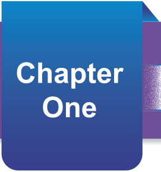

The Concept of a map
The landscape of the earth’s surface varies from one area to another. Normally, it is difficult to understand the landscape of a place without visiting a specific location. The map is a guide that simplifies learning about a certain area on the earth’s surface without having a physical visit to the place. In this chapter, you will learn about the meaning of a map, the types of maps, the essential elements of maps, the characteristics of a good map, and the importance of maps. The competencies developed will enable you to elaborate types of the maps in different contexts.

Think
The layout of different places on the earth’s surface
Meaning of a map
A map is a drawing that represents the information found on the earth’s surface by using a specific scale. Maps can be drawn on a paper, a piece of cloth, digital, or any flat area. The geographical information that can be represented on a map includes mountains, valleys, rivers, roads, buildings, and other important information. Maps help us to understand places and how to access them.